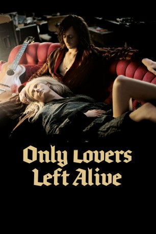

#7742 Only Lovers Left Alive
 
 IMDB-Wertung: 7.3 / 10
IMDB-Wertung: 7.3 / 10  Metascore: 0
Metascore: 0 
Die Reinheit des Bluts ist für Adam und Eve, Angehörige einer Spezies von unsterblichen Blutsaugern, zur Überlebensfrage geworden. Doch die Welt, in der sie seit Jahrhunderten existieren, ist von zunehmendem Verfall geprägt. Die vergiftete Umwelt, die hirnlosen Menschen, die die große Kultur der Vergangenheit in der multimedialen Unterhaltungsgegenwart nicht mehr zu schätzen wissen - all das treibt Vampir Adam in die Isolation und Depression und zwingt seine große Liebe Eve, mit der er seit Ewigkeiten verheiratet ist, zu handeln.
Jahr: 2013
Dauer: 117 Minuten
FSK: 12
Land: Deutschland Studio: Pandora Film VerleihTonspuren: DTS - ,
Untertitel:
Auflösung: 1080p (1920x1040) Größe: 6543 MB
Genre: Horror, Drama, Komödie, Liebe
Regisseur:  Jim Jarmusch
Jim Jarmusch
Drehbuch: Jim Jarmusch
Soundtrack: Jozef van Wissem
Darsteller:
 Tilda Swinton als Eve
Tilda Swinton als Eve Tom Hiddleston als Adam
Tom Hiddleston als Adam Anton Yelchin als Ian
Anton Yelchin als Ian Mia Wasikowska als Ava
Mia Wasikowska als Ava Jeffrey Wright als Dr. Watson
Jeffrey Wright als Dr. Watson Slimane Dazi als Bilal
Slimane Dazi als Bilal John Hurt als Christopher Marlowe
John Hurt als Christopher Marlowe- Ali Amine als Taxi Driver, Detroit
- Yasmine Hamdan als Yasmine
- Cody Stauber als Adam's Fan (uncredited)
- Carter Logan als Scott
- Aurélie Thépaut als Flight Attendant
- Dave W. als White Hills
- Ego Sensation als White Hills
- Nick Name als White Hills
- Fouad El Achaari als Man on Street, Tangier
- Hawchi Mustapha als Man on Street, Tangier
- Abdelkader Dourkan als Man on Street, Tangier
- Mohamed Chairi Felah als Man on Street, Tangier
- Bilal Chair Felah als Man on Street, Tangier
- Omar Raissouli als Man on Street, Tangier
- Marc Codsi als Guitarist
- Noureddine Touati als Gnaoua Player
- Hanane El Karni als Young Moroccan Lover
- Hamza Kadri als Young Moroccan Lover
Datei: X:\2013(N-Z)\Only Lovers Left Alive (2013, FSK12, 1920x1040).mkv seit 15.12.2017
Festplatte: HD 2013(I-Z)-2014(A-Z)
 Es gibt insgesamt 133 Filme in der Gruppe '2013(N-Z)'
Es gibt insgesamt 133 Filme in der Gruppe '2013(N-Z)'